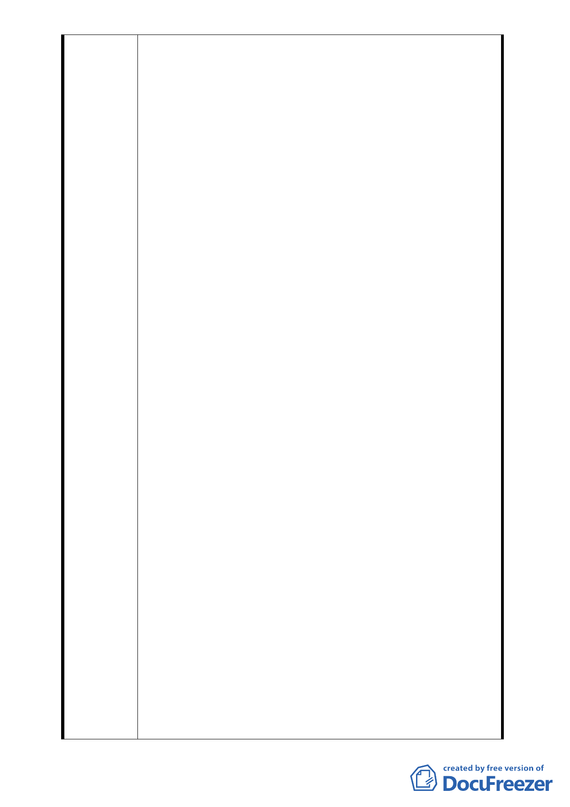

作成選擇大樓方案之決議。
四、陳情人認為合康公司擔任本都更案之實施者並不適格，
其理由如下：
(一)合康公司向地主要求提出之同意書，前項同意書雖記載
「本人已知悉本事業計畫內容…」，但迄今已逾一年，
該公司仍未交付該事業計畫之全部資料予各住戶，亦未
就計畫內容對住戶詳盡解說，對住戶要求之獎勵容積及
相關問題亦一再漠視，如事業計畫一旦確定，原已同意
之人除非有法定理由，即不得再撤銷。合康公司相關人
員顯有涉嫌觸犯刑法第339條第2項之詐欺罪，即應移送
法辨，台北市政府豈容同意其擔任實施者並同意其出具
之事業計畫？
(二) 依都市更新條例規定，事業計畫階段應再出具同意書，
此同意書除非有法定理由，即不得再撤銷。惟據台北市
政府表示，本「促進都市再生2010年台北好好看」都更
案，不必再取得地主之同意書，漠視母法都市更新條例
之規定，且依前所述，無論同意與否之地主迄今均未收
受任何事業計畫或其概要，台北市政將為求本都更案快
速開工，以達成業績，忽視法律規定，此舉即有違法之
嫌。 一旦通過，抗爭勢必升溫。本自救會亦將採取法律
行動。
(三)合康公司亦從未有辦理都更之經驗，此由其自取得地主
之同意書迄今，所為之各項作為，常與都市更新條例及
其子法之規定不符。
(四)合康公司僅係一資本額8800萬元之工程顧問公司，公司
所在地設於代表人家裡，即臺北市中正區仁愛路2段34號
12樓之3。實際之營業處所於同號4樓，係連同「閣康聯
合建築師事務所」向「財團法人林務局羅東林區管理處
職工委員會」所承租，名下並無恆產可言。
(五)為使都市更新工程順利進行，更新案應由實施者將土地
信託予受託銀行，於開發興建完成後，分配返還信託財
產予受益人。另為保證建築工案能順利完成，信託契約
最重要的即係「信託財產」，而信託財產更重要部分厥
為「信託專戶之資金」。依陳情人自行向台北市政府影
印取得之合康公司97年11月之本都更案事業計畫案預審
- 31 -